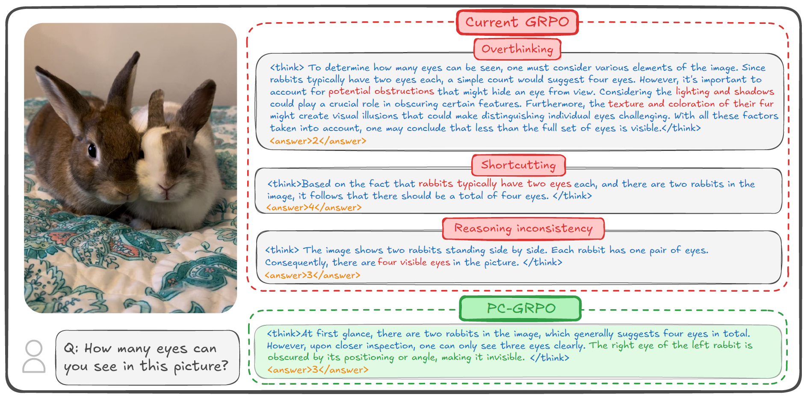
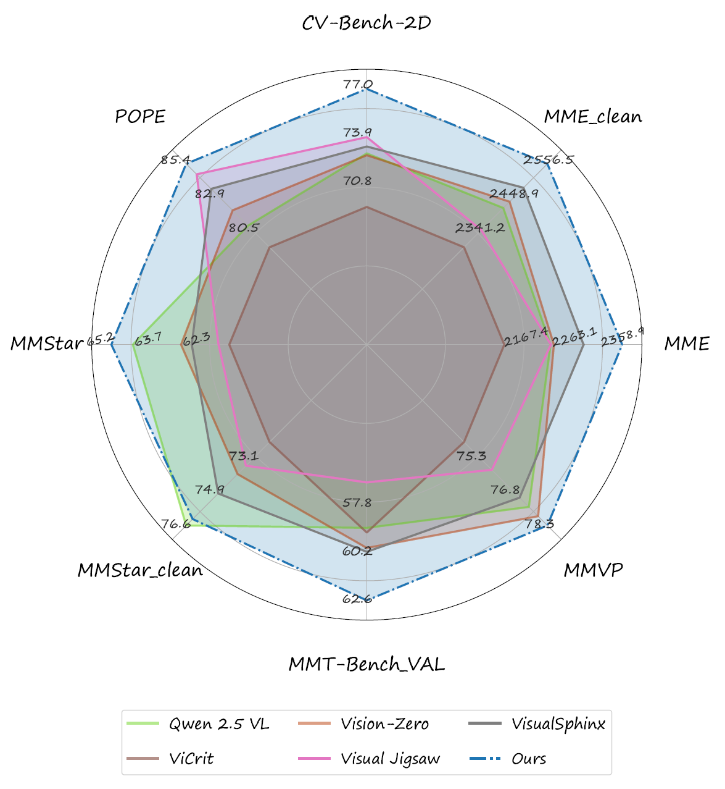
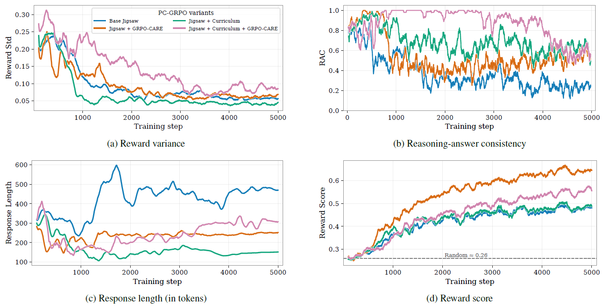
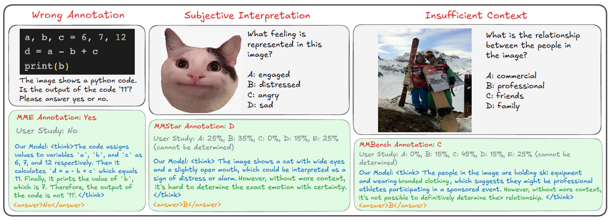
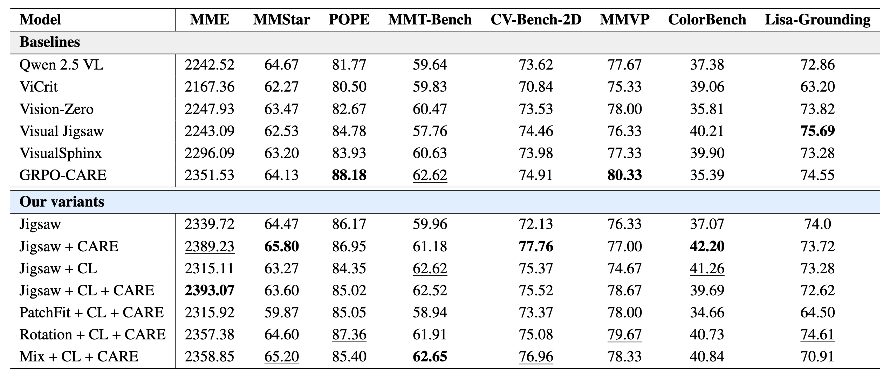
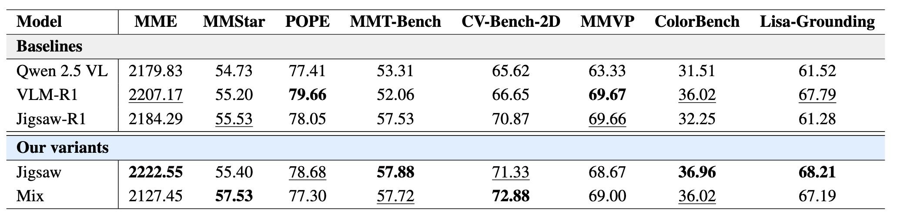

PuzzleCraft: exploration and difficulty aware curriculum to post-train puzzle based RLVR
Overview
GRPO-style RL post-training has made it much easier to elicit chain-of-thought reasoning in VLMs, but in practice we still see two persistent clusters of issues: optimization and behavior. On the optimization side, existing methods often depend on costly or noisy supervision (human labels or external verifiers), and use flat, sparse reward schemes where easy and hard examples contribute almost equally, leading to vanishing advantages and unstable learning. On the behavior side, GRPO-tuned models tend to overthink irrelevant details, shortcut to statistically likely answers, and frequently produce a final answer that contradicts their own reasoning trace—what we call reasoning–answer inconsistency. The illustration below shows these failure modes on a simple visual puzzle.

PuzzleCraft tackles these challenges with three components. First, it replaces hand-crafted supervision with a puzzle-based RLVR setup using three programmatically verifiable environments—PatchFit, Rotation, and Jigsaw—that provide clean, vision-centric rewards. Second, it uses a difficulty-aware curriculum that upweights medium-difficulty groups to counter flat rewards and stabilize GRPO training. Third, it defines a Reasoning–Answer Consistency (RAC) metric and uses consistency-aware reward schemes to align the chain of thought with the final answer. Together, these ingredients yield state-of-the-art results among open-source, supervision-free vision-centric post-training methods on Qwen2.5-VL-3B and 7B, as shown in the comparison with strong 7B baselines below.

Reasoning-Answer Consistency (RAC)
Reasoning–answer inconsistency—where a model’s final answer contradicts its own chain-of-thought—has been repeatedly observed in the LLM RL literature. Motivated by this, we explicitly track a Reasoning–Answer Consistency (RAC) metric during puzzle post-training, using an open-source Qwen-72B judge to score the alignment between rationales and answers across rollouts. The plot below visualizes how RAC evolves over training alongside three other signals: reward variance, average reward, and response length.

In our Jigsaw experiments, vanilla GRPO shows the worst RAC: near the end of training, answers collapse while rationales diverge, leading to a sharp drop in consistency. Adding our difficulty-aware curriculum already reduces this late-stage degradation, and combining it with the CARE consistency-enhancing reward scheme further boosts RAC throughout training. Together, curriculum + CARE yield the highest RAC trajectory among all variants, aligning better reasoning traces with more reliable final answers.
Benchmark Auditing
A useful byproduct of our supervision-free GRPO post-training is benchmark auditing. Because PuzzleCraft never relies on noisy human annotations or external verifiers, the resulting models often flag and correct mislabeled samples directly in the evaluation sets. Across several major vision-centric reasoning benchmarks, we find that noisy or questionable annotations are surprisingly common—sometimes affecting more than 10% of the samples.

We view this as a serious issue for the community and invite others to scrutinize benchmark quality alongside model performance. As an initial step, we experiment with an automatic auditing pipeline that uses a mix of high-end VLMs (e.g., GPT, Gemini, Claude) as label critics to detect and filter noisy samples, and we report results under this “cleaned benchmark” protocol in the paper.
Qwen2.5-VL 7B & 3B Performance
The results for the 7B baselines and our PuzzleCraft variants:

The results for the 3B baselines and our PuzzleCraft variants:

BibTeX
@misc{jeddi2025puzzlecurriculumgrpovisioncentric,
title = {Puzzle Curriculum GRPO for Vision-Centric Reasoning},
author = {Ahmadreza Jeddi and
Hakki Can Karaimer and
Hue Nguyen and
Zhongling Wang and
Ke Zhao and
Javad Rajabi and
Ran Zhang and
Raghav Goyal and
Babak Taati and
Radek Grzeszczuk},
year = {2025},
eprint = {2512.14944},
archivePrefix = {arXiv},
primaryClass = {cs.CV},
url = {https://arxiv.org/abs/2512.14944},
}